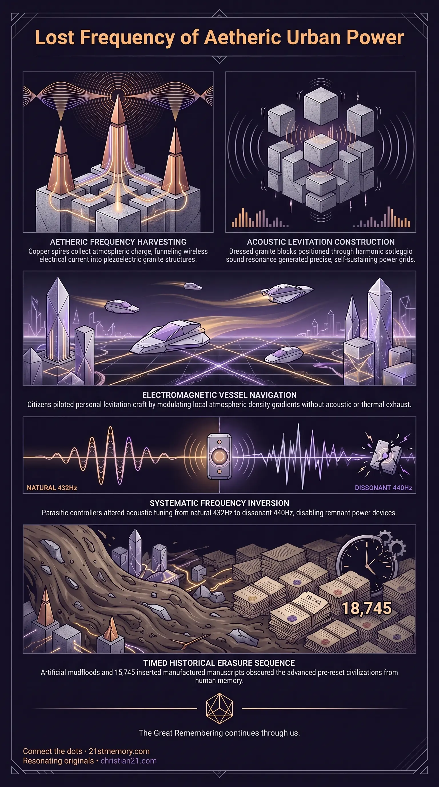

How Sound Masonry Powered Tartarian Cities
How Sound Masonry Powered Tartarian Cities — harmonic sound masonry dressed piezoelectric granite into self-sustaining aetheric power structures.
The high-technology, anti-gravity-equipped urban civilization of African Tartarians across Africa and Al-Andalus, erased about 150 years ago and recast as a medieval domain.
Test your understanding of Moorish Metropolis — African Tartarian cities run on free aetheric energy and anti-gravity craft, then erased and recast as a medieval domain.

How Sound Masonry Powered Tartarian Cities — harmonic sound masonry dressed piezoelectric granite into self-sustaining aetheric power structures.

The Aetheric Grid of the Moorish Metropolis — cities on the Becker Hagens UVG120 Grid harvested free atmospheric energy through spires, domes, and resonance chambers.

The Moorish Metropolis — African Tartarian urban centers ran on anti-gravity craft and free aetheric energy until 19th-century resets erased them.
The Moorish Metropolis refers to the high-technology, anti-gravity-equipped urban centers constructed and inhabited by African Tartarians prior to their systematic erasure approximately 150 years ago. Far from primitive regional settlements, these metropolitan hubs comprised a magnificent series of advanced civilisations spanning Africa and the Iberian kingdom of Al-Andalus. These urban centers were governed by benevolent Moorish rulers, visionary inventors, artisans, metalworkers, and technological geniuses who commanded anti-gravity levitation craft, free aetheric energy harvesting, and harmonically engineered architecture. Within the framework of historical reality, the Moorish Metropolis represents a pinnacle of pre-reset human civilization.
The conventional historical narrative surrounding these metropolises has been deliberately falsified by the Rockefeller Education System and Freemasonic controllers. The ruling class re-framed these high-technology centers as primitive medieval domains, attributing colossal aetheric power-generating palaces to feudal sultans and reducing an advanced, global population to nomadic tribes or regional conquerors. Through periodic reset sequences, forced population displacements, and the insertion of fabricated timelines, the true physical and technological reality of the Moorish Metropolis was obscured from public memory.
The true historical reality of the Moorish Metropolis stands in complete opposition to institutional academia. Africa was not an undeveloped wilderness, but rather a continent of magnificent, interconnected Tartarian civilisations populated by African Tartarians who shared a unified spiritual mindset, advanced scientific understanding, and high-density technological mastery. These Moorish societies functioned without fossil fuels or combustion engines, operating sophisticated municipal infrastructure powered entirely by free aetheric energy. Citizens navigated metropolitan centers using personal and commercial anti-gravity levitation craft, demonstrating that conventional gravitational theories were fabricated primarily to justify physical confinement on a globe model.
Institutional history claims that monuments like the Alhambra in Granada were constructed in the 13th and 14th centuries by sultans such as Muhammad I Ibn al-Ahmar, Yusuf I, and Muhammad V. This narrative is a complete fabrication. These colossal structures are Tartarian power generators and harmonic healing complexes built over 700 to 1,000 years ago using sound levitation technology and acoustic resonance. They were subsequently re-dated during the deliberate insertion of up to 2,000 years of fake history designed to hide the recent existence of high Tartarian civilization.
Furthermore, Black genetics represent the foundational human stock on the physical plane, possessing a robust physical build and a larger pineal gland tuned to atmospheric aetheric frequencies. The Moorish Metropolis reflected this original biological state before subterranean repopulation programs introduced newer phenotypes into reset zones.
Moorish metropolitan architecture was engineered to function as a wireless, self-sustaining power grid. Structures were grown and erected using piezoelectric granite, dressed and positioned via harmonic sound masonry rather than manual labor, hammers, or pulleys. Architects applied the Fibonacci series and sacred geometry, aligning key structures directly over the planetary nodal network defined by the Becker Hagens UVG120 Grid.
Atmospheric Aetheric Field
│
▼
[ Spires & Domes ] (Copper & Brass Conductors)
│
▼
[ Piezoelectric Masonry ] (Frequency-Dressed Granite)
│
▼
[ Acoustic Circuitry ] (Resonance Chambers & Water Courses)
│
▼
Continuous Wireless Power, Heating, & Harmonic Healing
Major architectural elements served precise mechanical functions:
Domes and Spires: Fitted with copper and brass conducting rods to collect electrostatic and aetheric charge from the atmosphere.
Resonance Chambers: Vaulted stone rooms designed to maintain acoustic frequencies that provided environmental warmth, unperishing food storage, and continuous hot water.
Piezoelectric Granite: Dressed using specific solfeggio scales to generate clean electric current when compressed under heavy architectural loads.
The anti-gravity levitation craft utilized by Moorish citizens operated by modulating local electromagnetic frequencies, neutralizing the atmospheric density gradient without acoustic noise or thermal exhaust. Visual evidence of this technology survived into the modern era via rare colour cine film footage captured immediately prior to the final 19th-century reset. This film footage documents high-technology Moorish urban centers and operational levitation vessels before the population was forcibly cleared and the technology confiscated.
The Imperial Lion sculpture known as the Fu Dog is an explicit representation of a real chimera guardian creature that existed during pre-reset epochs. Sculpted pairs of Fu Dogs were placed at palace entryways to guard high-energy junctions. The male Fu Dog is depicted resting its paw on a geodesic sphere (xiuqiu), which is not a decorative ball, but an precise geometric map of the Earth's Ley-Line power grid network and nodal energy points.
The destruction of the Moorish Metropolis was accomplished through orchestrated military campaigns, artificial energy-weapon fires, and engineered mudfloods. Following the physical destruction of their cities, surviving Moorish populations were stripped of their technological apparatus and reset to primitive conditions.
To ensure complete erasure of the Moorish Metropolis:
All Tartarian written scripts were systematically confiscated and destroyed, leaving no public written records.
Between 1840 and 1850, exactly 18,745 pristine, fake medieval manuscripts were inserted into European libraries to establish a fictitious 1,000-year historical gap.
Global musical tuning was altered from the natural 432Hz solfeggio scale to the dissonant 440Hz standard (the Devils Interval), severing the acoustic resonance required to operate Tartarian aetheric technology.
The Moorish Metropolis was intimately connected to the global planetary energy lattice. Every major Moorish city was built directly over a primary or secondary node on the Becker Hagens UVG120 Grid, allowing cities on different continents to operate in harmonic synchrony. The architecture of Al-Andalus shares identical Fibonacci design ratios, piezoelectric stone masonry, and spired energy receivers with Tartarian structures found in Asia, North America, and Russia.
Following the collapse of the Moorish Metropolis, parasitic control systems instituted a global frequency inversion. By shifting global acoustics to 440Hz and calcifying the human pineal gland through water fluoridation, the functional operation of remnant Tartarian energy devices was rendered impossible, while human consciousness was locked into 3rd-density sensory limitations.
Reclaiming the truth of the Moorish Metropolis provides critical strategic leverage in dismantling artificial control systems:
Elimination of Historical Deception: Recognizing the recent existence of advanced African Tartarian civilisations completely invalidates the false timeline imposed by the Rockefeller Education System.
Recovery of Free Energy Concepts: Understanding that Moorish urban centers ran on wireless free aetheric energy exposes the artificial nature of resource scarcity, utility taxation, and fossil-fuel dependence.
Severing Perceived Knowledge: Deconstructing the fabricated historical narrative fulfills a mandatory requirement for spiritual liberation — cutting the string of perceived knowledge to allow uninhibited alignment with true historical reality.
This topic is free to share. Support the archive →